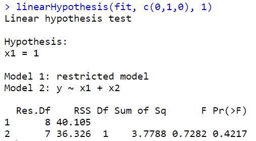
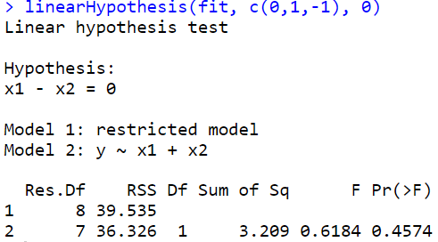
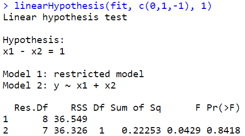
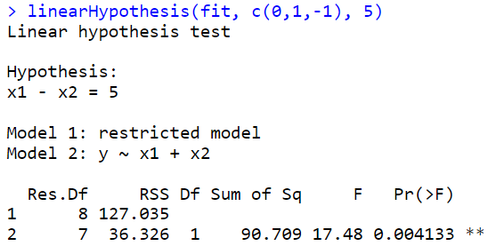

Loading required package: zoo
Attaching package: ‘zoo’
The following objects are masked from ‘package:base’:
as.Date, as.Date.numeric
선형회귀분석 CH0607
데이터(Boston)
| crim | zn | indus | chas | nox | rm | age | dis | rad | tax | ptratio | black | lstat | medv | |
|---|---|---|---|---|---|---|---|---|---|---|---|---|---|---|
| <dbl> | <dbl> | <dbl> | <int> | <dbl> | <dbl> | <dbl> | <dbl> | <int> | <dbl> | <dbl> | <dbl> | <dbl> | <dbl> | |
| 1 | 0.00632 | 18 | 2.31 | 0 | 0.538 | 6.575 | 65.2 | 4.0900 | 1 | 296 | 15.3 | 396.90 | 4.98 | 24.0 |
| 2 | 0.02731 | 0 | 7.07 | 0 | 0.469 | 6.421 | 78.9 | 4.9671 | 2 | 242 | 17.8 | 396.90 | 9.14 | 21.6 |
| 3 | 0.02729 | 0 | 7.07 | 0 | 0.469 | 7.185 | 61.1 | 4.9671 | 2 | 242 | 17.8 | 392.83 | 4.03 | 34.7 |
| 4 | 0.03237 | 0 | 2.18 | 0 | 0.458 | 6.998 | 45.8 | 6.0622 | 3 | 222 | 18.7 | 394.63 | 2.94 | 33.4 |
| 5 | 0.06905 | 0 | 2.18 | 0 | 0.458 | 7.147 | 54.2 | 6.0622 | 3 | 222 | 18.7 | 396.90 | 5.33 | 36.2 |
| 6 | 0.02985 | 0 | 2.18 | 0 | 0.458 | 6.430 | 58.7 | 6.0622 | 3 | 222 | 18.7 | 394.12 | 5.21 | 28.7 |
보스턴 집값 데이터이 데이터는 보스턴 근교 지역의 집값 및 다른 정보를 포함한다.MASS 패키지를 설치하면 데이터를 로딩할 수 있다.
- B보스턴 근교 506개 지역에 대한 범죄율 (crim)등 14개의 변수로 구성
• crim : 범죄율
• zn: 25,000평방비트 기준 거지주 비율
• indus: 비소매업종 점유 구역 비율
• chas: 찰스강 인접 여부 (1=인접, 0=비인접)
• nox: 일산화질소 농도 (천만개 당)
•
rm: 거주지의 평균 방 갯수 ***• age: 1940년 이전에 건축된 주택의 비율
• dis: 보스턴 5대 사업지구와의 거리
• rad: 고속도로 진입용이성 정도
• tax: 재산세율 (10,000달러 당)
• ptratio: 학생 대 교사 비율
• black: 1000(B − 0.63)2, B: 아프리카계 미국인 비율
•
lstat: 저소득층 비율 ****•
medv: 주택가격의 중앙값 (단위:1,000달러 당) 반응변수
산점도

마지막 행을 봐보자. 맨아래 왼쪽의 X축은 rm, Y축은 medv를 의미하고, 맨아래의 중간의 x축은 lstat를 의미한다.
rm이 클수록 집값이 증가하고(직선관계처럼 보인다)
lstat가 높아질수록 집값은 떨어지는 경향이 있다(곡선관계처럼 보인다. 처음엔 뚝 떨어지다가 천천히 감소)
rm과 lstat의 다중공산성을 봐야해! > 맨위 가운데 그림을 봐보자..
상관관계
# pairs(Boston, pch=16, col='darkorange')
cor(Boston[,which(names(Boston) %in%
c('medv', 'rm', 'lstat'))])| rm | lstat | medv | |
|---|---|---|---|
| rm | 1.0000000 | -0.6138083 | 0.6953599 |
| lstat | -0.6138083 | 1.0000000 | -0.7376627 |
| medv | 0.6953599 | -0.7376627 | 1.0000000 |
rm과 medv는 양의 상관관계
lstat와 mdev는 음의 상관관계
rm과 lstat는 음의 상관관계
회귀모형 적합
Call:
lm(formula = medv ~ rm + lstat, data = Boston)
Residuals:
Min 1Q Median 3Q Max
-18.076 -3.516 -1.010 1.909 28.131
Coefficients:
Estimate Std. Error t value Pr(>|t|)
(Intercept) -1.35827 3.17283 -0.428 0.669
rm 5.09479 0.44447 11.463 <2e-16 ***
lstat -0.64236 0.04373 -14.689 <2e-16 ***
---
Signif. codes: 0 ‘***’ 0.001 ‘**’ 0.01 ‘*’ 0.05 ‘.’ 0.1 ‘ ’ 1
Residual standard error: 5.54 on 503 degrees of freedom
Multiple R-squared: 0.6386, Adjusted R-squared: 0.6371
F-statistic: 444.3 on 2 and 503 DF, p-value: < 2.2e-16\(y=\beta_0 + \beta_1 x_1 + \beta_2 x_2 + \epsilon , \ \epsilon\) ~ \(N(0,\sigma^2)\)
모형을 적합하라는 것은, \(\hat \beta_0, \hat \beta_1, \hat \beta_2\)를 구해서 \(\hat y=\)꼴로 적어주기
- summary 결과 해석
회귀직선의 유의성에 대한 가설검정이다.
\(H_0: \beta_1=\beta_2=0\) vs \(H_1: \beta_1 \neq 0\) or \(\beta_2 \neq 0\)
F-statistic: 444.3, F=MSR/MSE,p-value: < 2.2e-16:p-value가 아주 작으므로 \(H_0\)를 기각할 수 있다. 즉 회귀직선은 유의하다.Residual standard error: 5.54= \(\sqrt{MSE} = \sqrt{\widehat \sigma^2} = \widehat \sigma^2\)Pr(>|t|):양측 검정에 대한 유의성 검정Estimate추정량, \(\hat \beta_0=-1.35827, \hat \beta_1=5.09479, \hat \beta_2=-0.64236\)Std. Error= \(s.e(\widehat \beta_i) = \dfrac{\sigma^2}{c_{ii}}\) 이고, \(\widehat {s.e}(\widehat \beta_i)\sqrt{\dfrac{\widehat \sigma^2}{c_{ii}}}\)t value는 \(t_0 = \dfrac{\widehat \beta_i - 0}{\widehat {s.e}(\widehat \beta_i)}\)절편은 유의하지 않다.
Residuals: 잔차해석. 0을 기준으로 대칭인가? 봤는데 max가 훨씬 더 커서 오른쪽으로 꼬리가 더 길 수 있겠네? 생각 가능
matrix
| 1 | 6.575 | 4.98 |
| 1 | 6.421 | 9.14 |
| 1 | 7.185 | 4.03 |
| 1 | 6.998 | 2.94 |
| 1 | 7.147 | 5.33 |
| 1 | 6.430 | 5.21 |
y = X\(\beta\) + \(\epsilon \rightarrow \widehat \beta = (X^TX)^{-1}X^Ty\)
| -1.3582728 |
| 5.0947880 |
| -0.6423583 |
- (Intercept)
- -1.35827281187452
- rm
- 5.09478798433654
- lstat
- -0.642358334244129
t(X): \(X^T\)를 의미%*%: 행렬곱의미solve(): 역행렬 구하는 함수\(\widehat y = X \widehat \beta\)
- 28.9410136806025
- 25.4842056605591
- 32.6590747685798
- 32.4065199998349
- 31.6304069906576
- 1
- 28.941013680603
- 2
- 25.4842056605591
- 3
- 32.6590747685798
- 4
- 32.4065199998349
- 5
- 31.6304069906576
- y_hat[1:5] 과 fitted(fit_Boston)[1:5] 값이 동일한 것을 확인 가능
5.54025736698867
5.54025736698867
\(SSE = \sum (y_i - \widehat y_i)^2\)
\(RMSE = \sqrt{SSE/(n-p-1)} = \widehat \sigma\)
lm사용
| rm | lstat | medv | |
|---|---|---|---|
| <dbl> | <dbl> | <dbl> | |
| 1 | 6.575 | 4.98 | 24.0 |
| 2 | 6.421 | 9.14 | 21.6 |
| 3 | 7.185 | 4.03 | 34.7 |
| 4 | 6.998 | 2.94 | 33.4 |
| 5 | 7.147 | 5.33 | 36.2 |
| 6 | 6.430 | 5.21 | 28.7 |
Call:
lm(formula = medv ~ rm + lstat, data = dt)
Residuals:
Min 1Q Median 3Q Max
-18.076 -3.516 -1.010 1.909 28.131
Coefficients:
Estimate Std. Error t value Pr(>|t|)
(Intercept) -1.35827 3.17283 -0.428 0.669
rm 5.09479 0.44447 11.463 <2e-16 ***
lstat -0.64236 0.04373 -14.689 <2e-16 ***
---
Signif. codes: 0 ‘***’ 0.001 ‘**’ 0.01 ‘*’ 0.05 ‘.’ 0.1 ‘ ’ 1
Residual standard error: 5.54 on 503 degrees of freedom
Multiple R-squared: 0.6386, Adjusted R-squared: 0.6371
F-statistic: 444.3 on 2 and 503 DF, p-value: < 2.2e-16- hat y = -1.3583 + 5.0948rm - 0.6424lstat
분산분석:회귀직선의 유의성 검정
\(H_0: \beta_1=\beta_2=0\) vs \(H_1: \beta_1 \neq 0\) or \(\beta_2 \neq 0\)
\(H_0\): 귀무가설, null hypothesis, 영가설 -> \(y=\beta_0\)
\(H_1\): 대립가설 -> \(y= \beta_0 + \beta_1 x_1 + \beta_2 x_2\)
| Df | Sum Sq | Mean Sq | F value | Pr(>F) | |
|---|---|---|---|---|---|
| <int> | <dbl> | <dbl> | <dbl> | <dbl> | |
| rm | 1 | 20654.42 | 20654.41622 | 672.9039 | 8.266887e-95 |
| lstat | 1 | 6622.57 | 6622.56999 | 215.7579 | 6.669365e-41 |
| Residuals | 503 | 15439.31 | 30.69445 | NA | NA |
- 설명변수가 두개로 쪼개져서 나온다.
null_model <- lm(medv~1, data=dt) #H0
fit_Boston <- lm(medv~., data=dt) #H1
anova(null_model, fit_Boston) ##***| Res.Df | RSS | Df | Sum of Sq | F | Pr(>F) | |
|---|---|---|---|---|---|---|
| <dbl> | <dbl> | <dbl> | <dbl> | <dbl> | <dbl> | |
| 1 | 505 | 42716.30 | NA | NA | NA | NA |
| 2 | 503 | 15439.31 | 2 | 27276.99 | 444.3309 | 7.008455e-112 |
null_model: 설명모델을 안쓰고 절편만 가져가는 모델. 1만 쓴다.(절편만)RSS의 \(15439.31=SSE=\sum(y_i - \widehat y_i)^2\)이고 \(42716.30 = \sum(y_i - \bar y)^2=SST\)SST와 SSE를 비교해서 적합이 잘 되어있는지 확인
Sum of Sq의 \(27276.99=SSR\)F= \(\dfrac{SSR/P}{SSE/(n-p-1)}\)
\(\beta\)의 신뢰구간
\(\widehat \beta_i \pm t_{a/2} (n-p-1) \widehat{s.e}(\widehat \beta_i)\)
| (Intercept) | rm | lstat | |
|---|---|---|---|
| (Intercept) | 10.06683612 | -1.39248641 | -0.099178133 |
| rm | -1.39248641 | 0.19754958 | 0.011930670 |
| lstat | -0.09917813 | 0.01193067 | 0.001912441 |
공분산 행렬 값
\(Var(\widehat \beta_1)=0.19754958, Var(\widehat \beta_2)= 0.001912441\)
#코드
confint(fit_Boston, level = 0.90)
#수식(직접계산)
coef(fit_Boston) + qt(0.975, 503) * summary(fit_Boston)$coef[,2]
coef(fit_Boston) - qt(0.975, 503) * summary(fit_Boston)$coef[,2]| 5 % | 95 % | |
|---|---|---|
| (Intercept) | -6.5867396 | 3.8701939 |
| rm | 4.3623583 | 5.8272176 |
| lstat | -0.7144229 | -0.5702938 |
- (Intercept)
- 4.87535465808391
- rm
- 5.9680255329079
- lstat
- -0.556439501179164
- (Intercept)
- -7.59190028183295
- rm
- 4.22155043576519
- lstat
- -0.728277167309094
\(n=506, p=2\)
summary(fit_Boston)$coef[,2]: s.e
평균반응, 개별 y 추정
- E(Y|x0), y = E(Y|x0) + epsilon
predict(fit_Boston, newdata = new_dt)
c(1,7,10)%*%beta_hat # hat y0 = -1.3583 + 5.0948*7 - 0.6424*10
1: 27.88165973604
| 27.88166 |
- \(x_{0}=\begin{pmatrix} 1 \\ 7 \\ 10 \end{pmatrix}, \widehat{y}_{0}=x_{0}^{T}\beta\)
| fit | lwr | upr | |
|---|---|---|---|
| 1 | 27.88166 | 27.17347 | 28.58985 |
절편을 포함하지 않는 회귀직선 (원점을 지나는 회귀직선)
- \(y=\beta_1 x_1 + \beta_2 x_2\)
Call:
lm(formula = medv ~ 0 + rm + lstat, data = dt)
Residuals:
Min 1Q Median 3Q Max
-17.714 -3.498 -1.075 1.877 27.750
Coefficients:
Estimate Std. Error t value Pr(>|t|)
rm 4.90691 0.07019 69.91 <2e-16 ***
lstat -0.65574 0.03056 -21.46 <2e-16 ***
---
Signif. codes: 0 ‘***’ 0.001 ‘**’ 0.01 ‘*’ 0.05 ‘.’ 0.1 ‘ ’ 1
Residual standard error: 5.536 on 504 degrees of freedom
Multiple R-squared: 0.9485, Adjusted R-squared: 0.9482
F-statistic: 4637 on 2 and 504 DF, p-value: < 2.2e-16
Call:
lm(formula = medv ~ ., data = dt)
Residuals:
Min 1Q Median 3Q Max
-18.076 -3.516 -1.010 1.909 28.131
Coefficients:
Estimate Std. Error t value Pr(>|t|)
(Intercept) -1.35827 3.17283 -0.428 0.669
rm 5.09479 0.44447 11.463 <2e-16 ***
lstat -0.64236 0.04373 -14.689 <2e-16 ***
---
Signif. codes: 0 ‘***’ 0.001 ‘**’ 0.01 ‘*’ 0.05 ‘.’ 0.1 ‘ ’ 1
Residual standard error: 5.54 on 503 degrees of freedom
Multiple R-squared: 0.6386, Adjusted R-squared: 0.6371
F-statistic: 444.3 on 2 and 503 DF, p-value: < 2.2e-16\(Adjusted R-squared: 0.9482\) vs \(0.6371\)
\(R^2=\dfrac{SSR}{SST}=\dfrac{\sum(\widehat y_i - \bar y)^2}{\sum(y_i-\bar y)^2}\)=\(\dfrac{설명변수 없을때와 있을때의 차이}{y의변동이 평균으로부터 얼마나 떨어져 있는지}\)
절편이 없는 모형의 \(R^2=\dfrac{\sum(\widehat y_i - 0)^2}{\sum(y_i-0)^2}\): 원점으로부터 얼마나 떨어져있는가. 기본적으로 엄청 큰 값을 가지게 된다.
절편이 있다 vs 절편이 없다 에서는 \(R^2\)과 \(RMSE=\widehat \sigma\)를 확인해주는 게 좋다.
RMSE비교 \(5.536\) vs \(5.54\) -> 별로 차이가 없네?
잔차분석
- epsilon : 선형성, 등분산성, 정규성, 독립성

- 선형성 애매함
등분산성
- H0 : 등분산 vs. H1 : 이분산 (Heteroscedasticity)
studentized Breusch-Pagan test
data: fit_Boston
BP = 1.5297, df = 2, p-value = 0.4654- p-value가 커서 기각을 못했다. 즉 등분산이다.
정규성
- 잔차의 QQ plot

이상치가 있는 듯 하다ㅡ
Shapiro-Wilk Test
Shapiro-Wilk normality test
data: res
W = 0.9098, p-value < 2.2e-16- 정규분포 아니다
독립성 검정 DW test
- H0 : uncorrelated vs H1 : rho != 0
Durbin-Watson test
data: fit_Boston
DW = 0.83421, p-value < 2.2e-16
alternative hypothesis: true autocorrelation is not 0- 독립이라고 할 수 없다.
가설검정: FM, RM
Call:
lm(formula = medv ~ ., data = Boston)
Residuals:
Min 1Q Median 3Q Max
-15.595 -2.730 -0.518 1.777 26.199
Coefficients:
Estimate Std. Error t value Pr(>|t|)
(Intercept) 3.646e+01 5.103e+00 7.144 3.28e-12 ***
crim -1.080e-01 3.286e-02 -3.287 0.001087 **
zn 4.642e-02 1.373e-02 3.382 0.000778 ***
indus 2.056e-02 6.150e-02 0.334 0.738288
chas 2.687e+00 8.616e-01 3.118 0.001925 **
nox -1.777e+01 3.820e+00 -4.651 4.25e-06 ***
rm 3.810e+00 4.179e-01 9.116 < 2e-16 ***
age 6.922e-04 1.321e-02 0.052 0.958229
dis -1.476e+00 1.995e-01 -7.398 6.01e-13 ***
rad 3.060e-01 6.635e-02 4.613 5.07e-06 ***
tax -1.233e-02 3.760e-03 -3.280 0.001112 **
ptratio -9.527e-01 1.308e-01 -7.283 1.31e-12 ***
black 9.312e-03 2.686e-03 3.467 0.000573 ***
lstat -5.248e-01 5.072e-02 -10.347 < 2e-16 ***
---
Signif. codes: 0 ‘***’ 0.001 ‘**’ 0.01 ‘*’ 0.05 ‘.’ 0.1 ‘ ’ 1
Residual standard error: 4.745 on 492 degrees of freedom
Multiple R-squared: 0.7406, Adjusted R-squared: 0.7338
F-statistic: 108.1 on 13 and 492 DF, p-value: < 2.2e-16
Call:
lm(formula = medv ~ rm + lstat, data = Boston)
Residuals:
Min 1Q Median 3Q Max
-18.076 -3.516 -1.010 1.909 28.131
Coefficients:
Estimate Std. Error t value Pr(>|t|)
(Intercept) -1.35827 3.17283 -0.428 0.669
rm 5.09479 0.44447 11.463 <2e-16 ***
lstat -0.64236 0.04373 -14.689 <2e-16 ***
---
Signif. codes: 0 ‘***’ 0.001 ‘**’ 0.01 ‘*’ 0.05 ‘.’ 0.1 ‘ ’ 1
Residual standard error: 5.54 on 503 degrees of freedom
Multiple R-squared: 0.6386, Adjusted R-squared: 0.6371
F-statistic: 444.3 on 2 and 503 DF, p-value: < 2.2e-16reduced_model보다는 full_model이 더 좋아 보인다. (R^2와 RMSE확인햇을떄)
13개 중 11개 변수가 유의함을 확인 가능
가설검정
RM : \(H_0: \beta_1= \dots = \beta_5 = \beta_7 = \dots = \beta_{12} = 0\)
| Res.Df | RSS | Df | Sum of Sq | F | Pr(>F) | |
|---|---|---|---|---|---|---|
| <dbl> | <dbl> | <dbl> | <dbl> | <dbl> | <dbl> | |
| 1 | 503 | 15439.31 | NA | NA | NA | NA |
| 2 | 492 | 11078.78 | 11 | 4360.525 | 17.60431 | 1.425983e-29 |
\(F = \dfrac{(SSE_{RM}-SSE_{RM})/r}{SSE_{FM}/(n-p-1)}=\dfrac{(SSR_{FM}-SSR_{RM})/r}{SSE_{FM}/(n-p-1)}=17.60431\)
RSS: SSE를 의미. RM의 \(SSE=15439.31\), FM의 \(SSE=11078.78\)Res.Df: \(n-q-1=503, n-p-1=492\)
#강의록에 있는 수식
p <- full_model$rank-1
q <- reduced_model$rank-1
SSE_FM <- anova(full_model)$Sum[p+1] #SSE_FM
SSE_RM <- anova(reduced_model)$Sum[q+1] #SSE_RM
F0 <- ((SSE_RM-SSE_FM)/(p-q))/(SSE_FM/(nrow(Boston)-p-1))
F0
17.60431143783
#기각역 F_{0.05}(p-q,n-p-1)
qf(0.95,p-q,nrow(Boston)-p-1)
# p-value -> 해당강의 20분쯤.. 어렵
1-pf(F0, p-q,nrow(Boston)-p-1)
1.80811652913556
0
#################################
reduced_model = lm(medv ~ .-age-indus, data = Boston) # 유의하지 않은 2개 변수 제거(-age-indus)
full_model = lm(medv ~ ., data=Boston) # 13개 변수
anova(reduced_model, full_model)| Res.Df | RSS | Df | Sum of Sq | F | Pr(>F) | |
|---|---|---|---|---|---|---|
| <dbl> | <dbl> | <dbl> | <dbl> | <dbl> | <dbl> | |
| 1 | 494 | 11081.36 | NA | NA | NA | NA |
| 2 | 492 | 11078.78 | 2 | 2.579374 | 0.05727398 | 0.9443416 |
- \(H_0: \beta_{indus} = \beta_{age} = 0\) 이고 H0기각 못하므로 빼도 된다.
General linear hypothesis
- 선형 가설 검정
x1<-c(4,8,9,8,8,12,6,10,6,9)
x2<-c(4,10,8,5,10,15,8,13,5,12)
y<-c(9,20,22,15,17,30,18,25,10,20)
fit<-lm(y~x1+x2) ##FM
summary(fit)
Call:
lm(formula = y ~ x1 + x2)
Residuals:
Min 1Q Median 3Q Max
-2.4575 -1.9100 0.3314 0.6388 3.2628
Coefficients:
Estimate Std. Error t value Pr(>|t|)
(Intercept) -0.6507 2.9075 -0.224 0.8293
x1 1.5515 0.6462 2.401 0.0474 *
x2 0.7599 0.3968 1.915 0.0970 .
---
Signif. codes: 0 ‘***’ 0.001 ‘**’ 0.01 ‘*’ 0.05 ‘.’ 0.1 ‘ ’ 1
Residual standard error: 2.278 on 7 degrees of freedom
Multiple R-squared: 0.9014, Adjusted R-squared: 0.8732
F-statistic: 32 on 2 and 7 DF, p-value: 0.0003011- \(H_0 : T\beta = c\)
- \(H_0 : \beta_1 = 1\)
\(y=\beta_0 + \beta_1 x_1 + \beta_2 x_2 + \epsilon\) 에서
\(y=\beta_0 + x_1 + \beta_2 x_2 + \epsilon\) 이 된다.
즉, \(y-x_1 = \beta_0 + \beta_2 x_2 + \epsilon\)
단순성형회귀모형이 되는것..(z)
ERROR: Error in library(car): there is no package called ‘car’- 오류가 나넹.. Rstudio에서 돌린거

기각 못한다. beta1=1
\(H_0 : \beta_1 = \beta_2\)

- \(H_0 : \beta_1 = \beta_2+1\)

- \(H_0 : \beta_1 = \beta_2+5\)

- 5로 바꾸고 나니까 기각할 수 있다.
- 강의노트 코드
Call:
lm(formula = y1 ~ z1)
Residuals:
Min 1Q Median 3Q Max
-2.5054 -1.9294 0.4236 0.6821 3.4473
Coefficients:
Estimate Std. Error t value Pr(>|t|)
(Intercept) -1.0014 2.2175 -0.452 0.663574
z1 0.6824 0.1242 5.493 0.000578 ***
---
Signif. codes: 0 ‘***’ 0.001 ‘**’ 0.01 ‘*’ 0.05 ‘.’ 0.1 ‘ ’ 1
Residual standard error: 2.137 on 8 degrees of freedom
Multiple R-squared: 0.7904, Adjusted R-squared: 0.7642
F-statistic: 30.17 on 1 and 8 DF, p-value: 0.0005785| Df | Sum Sq | Mean Sq | F value | Pr(>F) | |
|---|---|---|---|---|---|
| <int> | <dbl> | <dbl> | <dbl> | <dbl> | |
| z1 | 1 | 137.85135 | 137.851351 | 30.17378 | 0.0005784583 |
| Residuals | 8 | 36.54865 | 4.568581 | NA | NA |
| Df | Sum Sq | Mean Sq | F value | Pr(>F) | |
|---|---|---|---|---|---|
| <int> | <dbl> | <dbl> | <dbl> | <dbl> | |
| x1 | 1 | 313.04348 | 313.043478 | 60.323103 | 0.0001100467 |
| x2 | 1 | 19.03040 | 19.030400 | 3.667135 | 0.0970444465 |
| Residuals | 7 | 36.32612 | 5.189446 | NA | NA |
| Df | Sum Sq | Mean Sq | F value | Pr(>F) | |
|---|---|---|---|---|---|
| <int> | <dbl> | <dbl> | <dbl> | <dbl> | |
| z1 | 1 | 137.85135 | 137.851351 | 30.17378 | 0.0005784583 |
| Residuals | 8 | 36.54865 | 4.568581 | NA | NA |